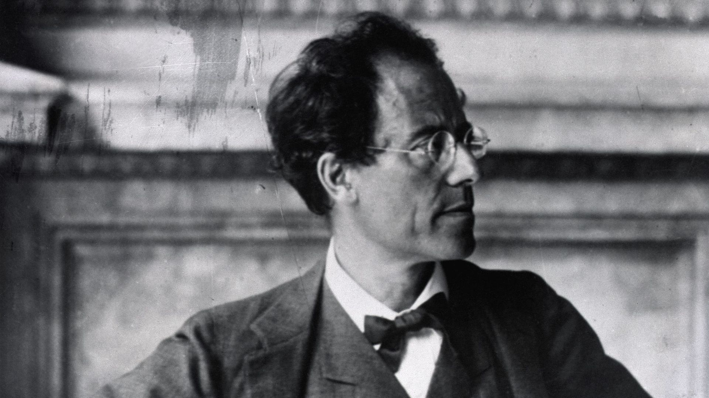

01 octobre 2021
« Ascenseur pour l’échafaud » : nuit blanche pour film noir
A l’occasion des trente ans de la disparition de Miles Davis, retour sur la contribution décisive du jazzman au septième

26 mai 2021
Gustav Mahler au cinéma, la symphonie des maux
Il y a cinquante ans, Luchino Visconti recevait la Palme d’or pour Mort à Venise, libre adaptation du court roman de Thomas
18 février 2021
Hervé Sellin : "Il y a une force universelle dans les mélodies de Michel Legrand"
Conversation avec le pianiste de jazz Hervé Sellin, qui rend hommage à l’œuvre et à la vie du compositeur français

31 octobre 2023
Halloween : les vibrations fantastiques du cinéma français
La célébration d’Halloween invite à se replonger dans le cinéma fantastique français et la façon dont certains compositeurs ont cherché, grâce à leurs accords, à suggérer l’angoisse et la peur. Sélection forcément non exhaustive.

13 octobre 2022
Comment Amine Bouhafa a composé la musique des « Harkis »
Le compositeur franco-tunisien, que l'on retrouve également au générique musical de la série Le Monde de demain sur ARTE, revient sur la manière dont il a imaginé la bande son du dernier film de Philippe Faucon. Un travail qui interroge le rôle de la musique au cinéma et la façon dont elle peut servir au mieux le propos d’un film.
13 décembre 2022
Musique et cinéma
Composante indissociable d’une oeuvre cinématographique, la musique donne le ton et rythme d'un film. Découvrez dans ce dossier comment travaillent les compositeurs, comment fonctionne le duo qu'ils forment avec un réalisateur.

21 juin 2022
IAM, Serge Gainsbourg, Agnès Varda… : la musique et l’image à l’honneur du festival Sœurs Jumelles
Organisé à Rochefort-sur-Mer du 22 au 25 juin 2022, Sœurs Jumelles célèbre sa deuxième édition avec plusieurs projections et rencontres, ainsi que quatre soirées à la croisée des arts musicaux et visuels.

09 mars 2022
Un concert de musiques de film dédié aux partitions favorites de Bertrand Tavernier à la Maison de la Radio et de la Musique
Le 19 mars prochain, l'Orchestre National de France sous la direction de Philippe Béran interprètera les compositions de dix classiques du cinéma français chers au regretté Bertrand Tavernier, de Quai des Brumes à Lola.

31 aout 2021
Le superviseur musical
« Architecte » de la bande-son d’un film, le superviseur musical assure aussi bien la production de musiques originales que l’achat des droits de chansons préexistantes. Des missions qui nécessitent des compétences juridiques, artistiques ou psychologiques. Explications avec Pascal Mayer, qui a fondé la société Noodles (Supervision) en 2009.